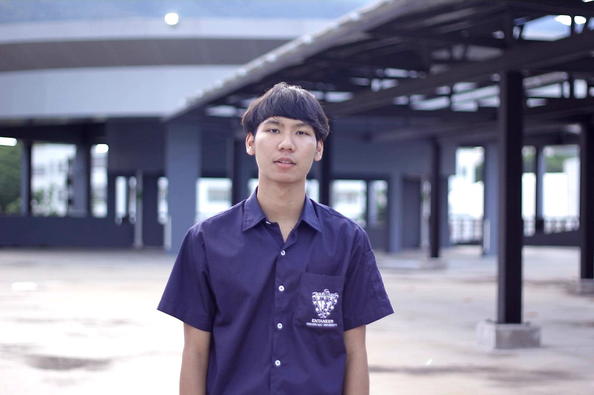

Panupong Tubkerd
Computer Engineering
|

|
Detail-oriented computer engineer with 5+ years of expertise
working with embedded systems, artificial intelligence,
machine learning, and automation technologies.
Increased multiply-accumulate performance on proprietary DSP
algorithms by 5% through system and chip analysis revamp.
Seeking to leverage first-hand experience with driverless car
technology and integrated systems to become the lead computer
engineer at Alset Automotive Technologies |
Education
|
Old Dominion University, Norfolk, VA
Bachelor of Computer Engineering -
3.5 GPA
|
Experience |
Artificial Mobility Systems & Design, Cincinnati, OH
Embedded Systems Computer Engineer
December 2016 – July 2019
Oversaw design, development, and upgrades to system-on-chip devices
and Internet-of-Things (IoT) electronics.
|
IoT Research Associates of Ohio, Cincinnati, OH
AI / ML Computer Engineer
June 2014 – November 2016
Developed artificial intelligence and machine learning products,
software, and other solutions for commercial,
industrial,and educational purposes.
|
|
Technical
|
|
C++
Java
|
Javascript
Windows 7/10
|
Python
HTML
|
|
Panupong Tubkerd — panupong_tubk@cmu.ac.th || (+66) - 806 - 825860
|